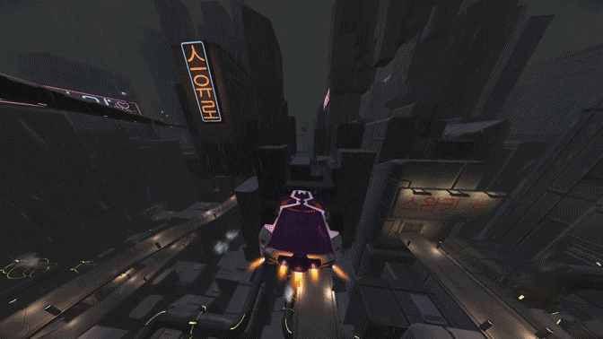
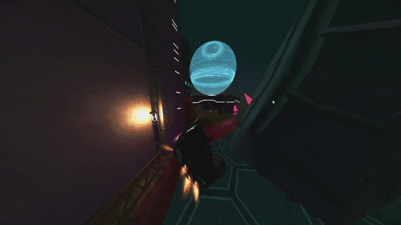
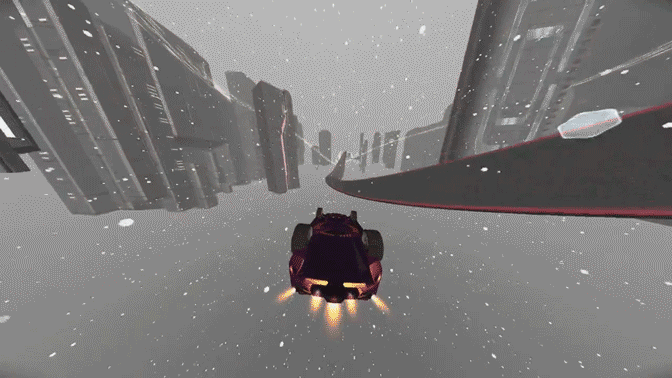
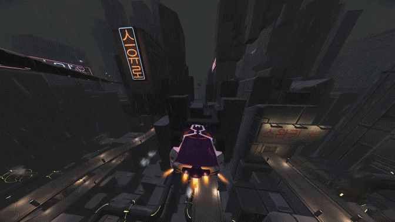
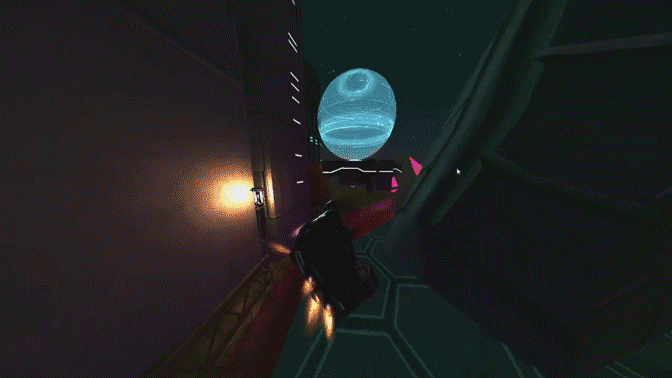
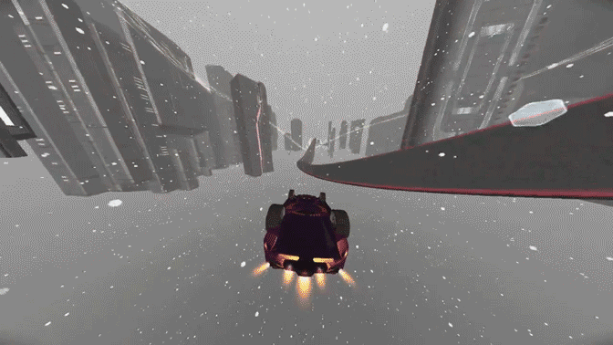

A Guide To Most Distance Mechanics
> Soft Landing with Wings
One of the things that you can do to retain a little bit of speed is using wings to land softly. It involves activating wings and turning away from a surface as you land on it.



The way this makes you faster is that it converts some of your downward speed into forward speed, and the way you redirect that downward speed into forward speed is with wings. (Note: If you play with keyboard, then the default button for pulling up will be the same as reverse/brake. This will make it so that doing this technique will be slower! To resolve this, I recommend binding reverse/brake to a separate button; I have it LCtrl.) You also don't need to deactivate wings yourself, as the wings will retract on their own after 2 wheels touch a surface.



The way this makes you faster is that it converts some of your downward speed into forward speed, and the way you redirect that downward speed into forward speed is with wings. (Note: If you play with keyboard, then the default button for pulling up will be the same as reverse/brake. This will make it so that doing this technique will be slower! To resolve this, I recommend binding reverse/brake to a separate button; I have it LCtrl.) You also don't need to deactivate wings yourself, as the wings will retract on their own after 2 wheels touch a surface.